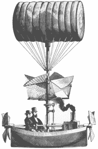

|
New, Energy-Saving Automobile
 In a new effort to bring consumers what they want, an environmentally friendly mode of transportation, Ford and General Motors will be presenting their latest effort, The Dirigible, in Japan next month.
General Motors spokesperson, Janice Trendy, released this statement to The Rutabaga earlier today:
"For the longest time consumers have wanted something that could compete both price and performance-wise to today's fossil fuel burning cars. Well, we couldn't give them that. But what we can give them is this, The Dirigible."
"That's right. For five times the price of an average car, and one-fourth the performance, you can have The Dirigible. Costing a mere $90,000, The Dirigible is every car lover's dream. It gets an environmentally friendly 10 miles per gallon - that's five miles more per gallon than is required by the U.S. government!"
"Oh, and never mind that polluting smoke billowing out of the stack in front of those two weirdly dressed gentleman."
|
|